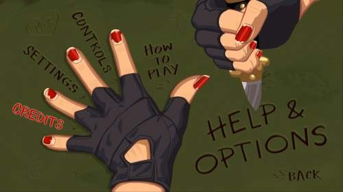
Если показать любому игровому программисту лекции про пользовательский интерфейс года эдак 2006, а потом показать ему что он наклодовал в современной игре, то он узнает в них почти всё, но с небольшими оговорками. Поменялись названия API и язык кодогенерации, но архитектура и основные идеи остались те же: дерево контролов, свойства с рефлексией, связи между свойствами, шаблоны, абстракция над движком и вечная война за пиксель-в-пиксель.
Пользовательский интерфейс в играх это место, где встречаются все худшие архитектурные требования сразу, на них накладываются требования дизайнера UI, который сидит через стол и просит, чтобы окно появлялось «вот так с анимацией», причем «вот так» зависит выпил ли он чашку кофе или еще нет. Вечером приходит художник, который нарисовал кнопку в фотошопе и хочет, чтобы на экране она выглядела пиксель-в-пиксель, и вы обязаны учесть эти требования, потому что в этой цепочке принятия решений художник стоит ближе к финальной картинке. А еще есть программист игровой логики, который не хочет знать, как называется конкретный лейбл, и не должен этого знать.
Под конец приходит локализатор, который превратил «1 enemy / 2 enemies» в «1 враг / 2 врага / 5 врагов» и зависимость от рода. Иногда заскакивает инженер по портированию, которому надо то же самое окно крутить на PC, консолях или мобилках с разными разрешениями и соотношениями сторон, ну на него пофиг, он сам себе программист и если что, допишет код. И всё эти требования должны как-то жить вместе.
Большая часть студий начинала с написания системы GUI «по месту», т.е. для конкретной игры, под конкретный рендер, с захардкоженной раскладкой, а когда выходила следующая игра, выяснялось, что вытащить старый GUI почти невозможно. Такой UI насквозь срастается с рендером, инпутом, звуком и игровой логикой и каждый следующий проект начинается с фразы «давайте сделаем нормально один раз», и каждая следующая итерация показывала, что «нормально» это не одна задача, а много и одновременно.
Не переключайтесь, будет еще вторая часть про то как этот самый UI мучали от игры к игре...
Фундамент
Классическая (это не значит что только одна) структура пользовательского интерфейса почти везде одинакова и выглядит как дерево узлов, где каждый узел это либо контейнер с детьми, либо листовой (финальный) контрол (кнопка, лейбл, картинка), что есть классический паттерн Composite из GoF в его максимально каноничной форме.
Window
├── Panel "Header"
│ ├── Label "Title"
│ └── Button "Close"
├── Panel "Content"
│ ├── ListBox "Items"
│ └── ScrollBar
└── Panel "Footer"
├── Button "OK"
└── Button "Cancel"Это дерево потом обходится для всего: для отрисовки, для хит-теста, для применения эффектов, для сохранения, для отправки сообщений. Все современные движки построены поверх этой же идеи, от Slate в Unreal до UGUI и UI Toolkit в Unity, или Control-нодов в Godot, и различия начинаются обычо на уровне «как это дерево создаётся, хранится и редактируется».
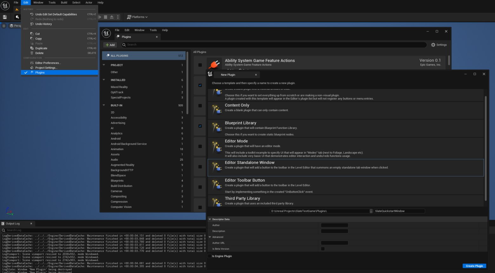
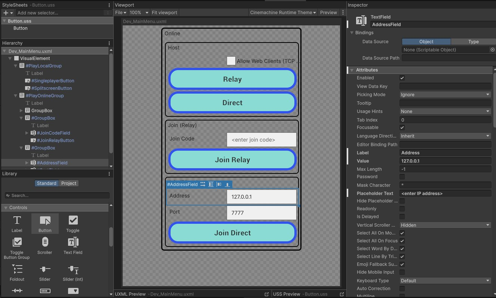
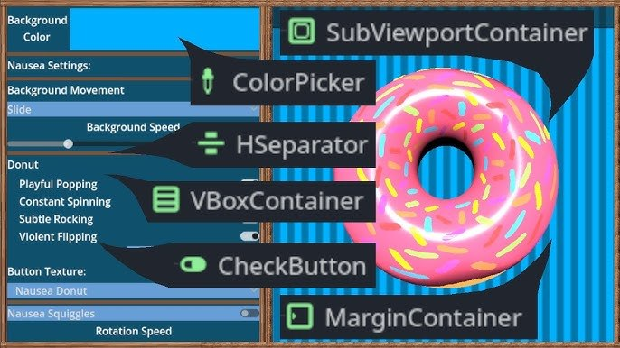
Композит хорош тем, что почти любая операция формулируется как обход дерева. Композит плох тем, что наивно реализованный обход может проходить дерево по десять раз за кадр и тратить бюджет кадра, поэтому реальные системы кешируют bounding-боксы, попадание мыши, видимость, результирующую трансформацию и итоговую геометрию для отрисовки.
Свойства и рефлексия
Если на дереве есть кнопка, то у неё есть какие-то параметры вроде позиции, размера, текста, текстуры состояний, шрифта, цвета и обработчик клика. Если завести эти параметры как обычные C++-поля, то редактор GUI не сможет показать их без отдельного хардкода под каждый класс контрола, потому что C++ ничего не знает про названия своих полей.
Решение, к которому пришли все движки, выглядит что у каждого контрола есть список свойств, и каждое свойство несёт своё имя, тип и значение. Это дает возможность свойствам жить в обычном векторе и быть доступными по имени.
struct Property {
std::string name;
PropertyType type;
variant<int, float, std::string, Color, Texture*> value;
};
class Control {
vector<Property> properties;
public:
const Property* find(const std::string& name) const;
void set(const std::string& name, const Variant& value);
const std::vector<Property>& list() const;
};Редактор UI получает этот список и строит панель свойств, где на каждое свойство есть виджет подходящего типа. Никаких ручных биндингов в таком случае нет «вот это поле редактируем слайдером, а вот это чекбоксом» не нужно, добавили новое свойство в коде и оно появилось в редакторе. Эта же таблица свойств используется самим контролом для всех вычислений, поэтому не возникает классической проблемы, когда «в редакторе одно, в рантайме другое».
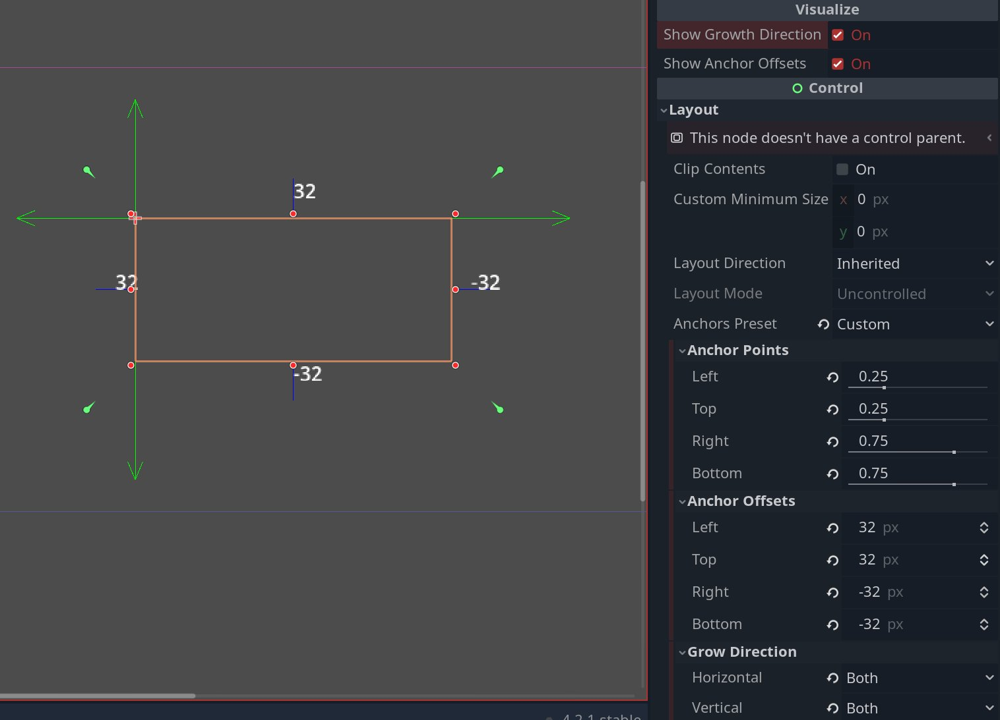
Этот подход живёт под разными именами во всех движках. В Unity это SerializedProperty поверх атрибута [SerializeField], в Unreal UPROPERTY(), в Godot @export, в WPF/WPFG DependencyProperty. Везде идея такая, что каждое свойство должно быть описано в виде данных, а не C++/C#-кода, иначе ни редактор, ни сериализатор, ни анимация про него ничего не узнают.
Бонусом получается красивая интроспекция в дебаге, когда можно сдампить состояние любого контрола одной функцией и видеть прямо в логах, какие у него были значения свойств на момент бага. Кто видел dump виджета в каком-нибудь Hearthstone с торчащими наружу внутренностями, понимает, о чём речь.
{
"widget_type": "CardRewardPopup",
"game": "Hearthstone-rt-europe-aw-ttn",
"version": "1.4.2",
"state": {
"visible": true,
"animation": "goldenReveal",
"input_locked": false
},
"layout": {
"anchor": "center",
"width": 1280,
"height": 720,
"background": {
"texture": "ui/rewards/reward_bg_parchment.png",
"vignette": true,
"particles": "embers_soft"
}
},
"header": {
"title": "Victory Reward",
"font": "BelweBold",
"color": "#F6D37A",
"glow": true
},
"cards": [
{
"entity_id": 77421,
"card_id": "CORE_EX1_116",
"name": "Leeroy Jenkins",
"rarity": "Legendary",
"mana_cost": 5,
"golden": true,
"foil_animation": "legendary_swirl",
"position": {
"x": 0.5,
"y": 0.48
},
"rotation": -1.2,
"scale": 1.15,
"sound_on_reveal": "sfx_card_legendary_reveal"
}
],
"buttons": [
{
"id": "btn_collect",
"text": "Collect",
"style": "hs_primary_blue",
"hover_sound": "sfx_hover_generic",
"click_sound": "sfx_confirm"
},
{
"id": "btn_share",
"text": "Share",
"style": "hs_secondary_wood"
}
],
"effects": {
"camera_shake": {
"enabled": true,
"intensity": 0.15
},
"screen_particles": {
"enabled": true,
"preset": "legendary_fireflies"
},
"ambient_audio": "music_pack_opening_soft"
},
"telemetry": {
"session_id": "5fbb2b93-c7e0-4f4c-b3fc-dca2af2fce11",
"source": "arena_reward_track",
"fps_capture": 60
}
}Связи свойств и развязка с игровым кодом
Классическая проблема, в которую упирается любой неаккуратный GUI, это когда игровой код, чтобы обновить значение на экране, должен знать имя окна и имя конкретного контрола внутри окна.
// Так делать плохо
FindControl("hud_root")->FindControl("label_armor")->SetCaption(player.armor);
FindControl("hud_root")->FindControl("label_hp")->SetCaption(player.hp);Любая перерисовка окна художником ломает игровой код, переименование контрола ломает игровой код, замена лейбла на прогресс-бар ломает игровой код, потому что у прогресс-бара нет метода SetCaption. Это типичная ловушка, у неё даже есть собственное имя (код-паровозик, train wreck code).
По научному это называется Feature Envy из каталога Фаулера, когда метод одного класса слишком много знает о внутренностях другого и активно лезет в его данные. Но когда два модуля знают друг о друге слишком много, то изменение одного неизбежно тянет за собой изменение другого. Если говорить вне GUI специфики, то это ещё называется Fragile Class, которое является классическим нарушением принципов разделения представления и логики.
Развязка делается через слой биндингов, когда на уровне редактора каждый контрол прокидывает наружу не свои внутренние свойства, а игровые имена, которые с этими свойствами связаны. То есть художник собирает окно HUD, добавляет лейбл, и в его настройках указывает: «моё свойство text будет видно снаружи под именем armor_value». А внутри игрового кода обновление выглядит так:
gui.update_window("hud", {
{"armor_value", player.armor},
{"hp_value", player.hp},
{"unit_name", player.name},
{"unit_icon", player.portrait},
});Игровому коду больше не нужно знать ни тип контрола, ни структуру окна, ни даже сколько лейблов на нём вообще. Художник может разломать всё внутри окна и собрать заново, и пока имена связей не поменялись, игра продолжает работать. Этот же паттерн жил, живёт и будет жить в каждой системе биндинга WPF/WGFG, когда все что не относится к рендеру виджета выносится в конфиг.
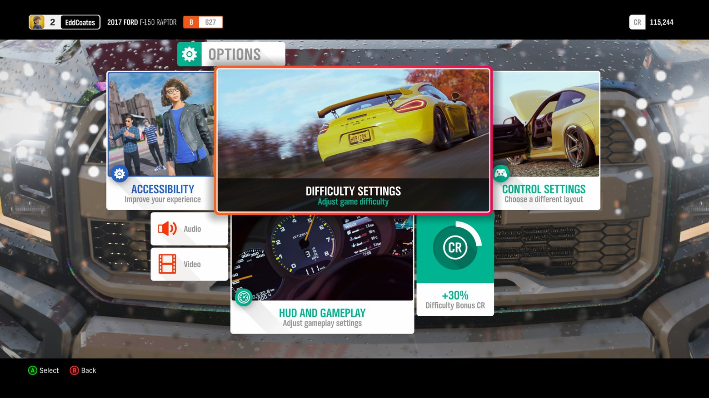
Шаблоны и prefabы задолго до Unity
Когда в проекте появляются десятки окон, выясняется, что в каждом из них есть одинаковые кусочки, например, панель с заголовком и крестиком, кнопка «OK/Cancel», табы, скролл-листы. Делать в каждом окне один и тот же набор контролов с нуля больно, а заводить под это отдельные C++-классы будет ещё больнее, потому что после этого их нельзя будет редактировать в редакторе как обычные данные.
Решением этой проблемы стали шаблоны (Unity много позже назовёт Prefab, а в Unreal это Blueprint Class). И работает почти буквально как Prototype из GoF, только с оговоркой, что там будет не наследование, а просто копирование свойств и всех дочерних компонент.
Template "DialogWithHeader"
├── Panel "Background"
├── Panel "TitleBar"
│ ├── Label "Title"
│ └── Button "Close"
└── Panel "Content" <-- слот для пользовательского содержимогоДальше шаблон регистрируется в фабрике как новый тип компонента, появляется в палитре редактора и его можно перетаскивать на окна, как обычную кнопку. На уровне сохранения шаблоны хранятся в файле, но лежит не вся внутренняя структура шаблона, а только имя шаблона и diff свойств конкретного инстанса относительно эталонного.
<instance template="DialogWithHeader" name="QuitDialog">
<override path="TitleBar.Title.text" value="Выйти из игры?"/>
<override path="Content" value="@QuitDialogContent"/>
</instance>Этот diff-формат потом ровно в таком виде унаследует Unity (Prefab Overrides, появились в Unity 2018) и Unreal (Blueprint Defaults). Если кто-то когда-то открывал .prefab-файл в текстовом редакторе и видел кучу m_Modifications, то это оно и есть.
Сообщения и уровни обработчиков
Когда на кнопку тронули или что-то с ней сделали, кто-то должен это обработать. Обычно выделяют три уровня обработчиков.
Процессор сообщения или низкоуровневая функция, которая получает «сырое» сообщение от мыши, валидирует параметры и решает, что вообще произошло (клик, drag, hover). Его задача отделить "что пришло от железа" от "что это значит для UI". Мышь присылает координаты и флаги кнопок, и кто-то должен решить что это был именно клик, а не начало drag-а, а координаты попали именно в эту кнопку, а не в соседнюю с учётом хитбоксов и перекрытий.
// Живёт в системе ввода GUI, а не в контроле
// Поэтому межкадровое состояние лежит тут
class InputProcessor {
void on_mouse_down(const MouseEvent& e, double now) {
...
}
void on_mouse_move(const MouseEvent& e) {
...
}
}На отдельном уровне это делается, чтобы обеспечить единую валидацию для всех контролов: проверка координат, проверка что кнопка не задизейблена, проверка что она не перекрыта другим окном не должна дублироваться в каждом OnClick. И только здесь мы можем отличить клик от drag-а, double-click от single-click, что требует хранить состояния между кадрами (время нажатия, дельта координат), и это глупо держать в самом контроле.
Системный обработчик или виртуальный метод вроде OnClick, который контрол может переопределить, чтобы поменять своё внутреннее состояние (например, кнопка меняет текстуру с idle на pressed).
Почему это выносят в отдельный уровень, а не делают частью пользовательского обработчика? Просто визуальное состояние кнопки это ответственность самой кнопки, а не игрового кода который её использует и если бы этого уровня не было, каждый пользовательский обработчик был бы обязан вручную менять текстуру, и при добавлении нового типа кнопки это нужно было бы поменять везде где она используется.
Виртуальный метод позволяет наследнику переопределить поведение не трогая ни уровень выше ни уровень ниже. ToggleButton переопределяет OnClick чтобы оставаться в состоянии pressed после отпускания, RadioButton переопределяет чтобы снять выделение с соседей, делая всё это без знания о том что именно делает пользовательский обработчик.
class Button : public Control {
virtual void on_press() { set_texture(textures.pressed); }
virtual void on_release() { set_texture(textures.idle); }
virtual void on_click() {} // у обычной кнопки визуально клик == release
}Системный обработчик нужно вызывать до пользовательского, чтобы к моменту к моменту когда игровой код реагирует на клик, кнопка уже визуально изменила свое состояние. Объяснение чисто психологическое и пришло из UX, если пользовательский обработчик делает что-то долгое, то игрок уже видит фидбек что нажатие зарегистрировано.
Последний уровень это пользовательский обработчик или делегат, который привязывается снаружи и ничего не знает о внутренностях кнопки и его задача исключительно игровая логика, чтобы открыть экран, запустить миссию, списать монетки.
// Привязка в данных/редакторе, а не в коде кнопки.
// Кнопка не знает ни типа экшена, ни его параметров.
start_button.bind("OnClick", StartMissionAction{}, {{ "mission_id", 7 }});Опять же почему функтор? Почему не виртуальный метод? Потому что виртуальный метод требует наследования, а наследование означает, что под каждую кнопку с разным поведением нужно будет завести отдельный класс. В реальной игре кнопок сотни и поведений сотни и создавать StartMissionButton, OpenShopButton, AddCoinsButton и третий уровень это закрывает, позволяя привязать любое поведение к любой кнопке без нового класса. Кнопка не знает имени окна которое надо открыть, не знает имени контрола которому надо что-то сказать, она только сообщает "меня нажали" и дальше не её дело. К функтору можно прибиндить параметры до его вызова, его можно сериализовать в редакторе как «вот этот обработчик с такими-то аргументами», его можно копировать в очередь команд.
GUI_ACTION(StartMissionAction) {
int mission_id = get_param<int>("mission_id");
g_game.start_mission(mission_id);
};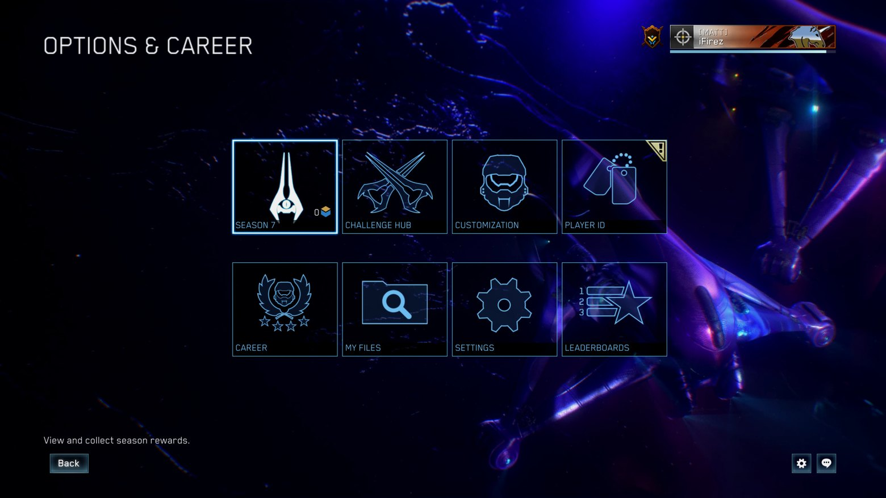
class Button : public Control {
void process_mouse_click(const MouseEvent& e) { // процессор
if (!hit_test(e.x, e.y)) return;
on_click(); // системный обработчик
fire_user_action("OnClick"); // пользовательский
}
virtual void on_click() { // системный
set_texture(textures.pressed);
}
};Современные движки эти уровни повторяют один к одному, просто потому что лучше не придумали. В Unreal Slate есть «OnClicked», в Unity UI Button.OnClick()-евент, в Godot правда извернулись и сделали сигналы, но тоже вышло неплохо. Между процессором сообщения и пользовательским обработчиком всегда сидит виртуальная функция, в которой контрол меняет свой собственный внешний вид. Если в каком-то движке вы видите кнопку, у которой «нажатие» приходит сразу в пользовательский код в обход внутренней визуальной реакции, это движок, который вам ещё доставит проблем.
Как доставить сообщение
Наивный способ доставки сообщения в дереве контролов это "всплытие/пузырьковая почта": послали сообщение в корень, оно идёт по дереву и кто-то его перехватывает. Так делает HTML с его event bubbling и WinAPI с цепочкой WndProc. Это откровенная лажа из конца восьмедесятых, потому что тогда лучше не придумали, но потом это перешло в каком-то виде в движки и там осталось. В большом окне с сотней контролов такое поведение становится непредсказуемым и непонятно, кто и почему «съел» сообщение по дороге, и отлаживаются такие баги только "глазами".
class Gui {
std::unordered_map<std::string, Control*> windows_; // индекс верхнеуровневых окон
public:
// Самый частый случай из игрового кода по имени окна.
void send(const std::string& window, const GuiMessage& msg) {
if (auto it = windows_.find(window); it != windows_.end())
it->second->dispatch(msg);
}
// По указателю когда адресат уже на руках, без поиска по строке.
void send(Control* target, const GuiMessage& msg) {
if (target)
target->dispatch(msg);
}
};
gui.send("pause_menu", GuiMessage::Hide); // "скрой окно pause_menu"Самым старым и упорным болящим является Unity uGUI и классическая жалоба разработчиков это "другой UI перехватывает мои клики". Отладка сводится к тому чтобы выбрать EventSystem и посмотреть в preview-панели кто именно получил событие. Невидимый Image с включённым Raycast Target может съедать все клики, и найти его можно только глазами по дереву иерархии. События в uGUI распространяются наоборот, от дочернего к родительскому, то есть это "обратная пузарьковая почта" и родитель получает событие только если дочерний его не обработал. Это чуть лучше чем WinAPI, но фундаментальная проблема та же.
Другой пострадавший это World of Warcraft с его XML+LuaUI фреймворком. Там события тоже всплывают по иерархии фреймов, и аддон-разработчики годами воевали с ситуацией когда чужой аддон ставит невидимый фрейм поверх всего и съедает клики. Blizzard в итоге добавили SetPropagateMouseClicks именно как костыль для этой проблемы.
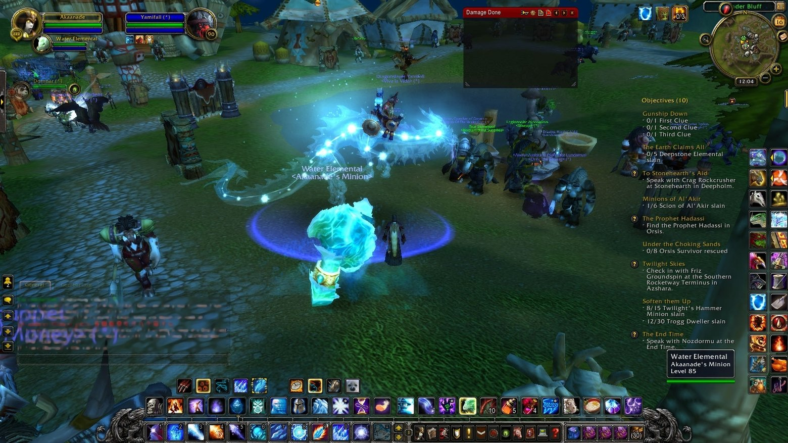
Реальное же применения в играх делится на два решения.
Пользовательские сообщения (изменить свойство, скрыть окно, запустить эффект) доставляются по имени или по указателю напрямую адресату. Обычно по имени, потому это удобно из игрового кода («скрой окно pause_menu»), но имена не уникальны, особенно внутри шаблонов.
Сообщения от мыши и тача доставляются «по координатам», когда надо найти самый верхний контрол, накрывающий точку клика, и шлём сообщение ему. Но если каждый кадр обходить всё дерево, то оно становится узким местом, поэтому хит-тест кешируется и пока ни один контрол не двигался и не менял видимость, мы знаем, какой контрол лежит сверху в каждой точке экрана, и обращение становится константным.
Этот механизм используется в Unity GraphicRaycaster, когда кеш позиций виджетов пересоздаётся не каждый кадр, а по триггеру изменения иерархии. Если в проекте тормозит UI и в профайлере висит GraphicRaycaster.Raycast, скорее всего, что-то нечаянно дёргает invalidate этого кеша каждый кадр.
// "Мерцалка" иконки HUD, которая якобы ничего не двигает
void HudBlinker::update() {
icon_->set_position(icon_->position()); // значение то же, но invalidate() уже дёрнут
// => hit_cache_ грязный каждый кадр => rebuild() на каждый клик
}Регионы и хит-треугольники
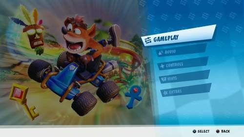
Очевидная штука, которую все забывают, пока не упрутся в скос на скруглённой кнопке или в круглый аватар, что стандартный хит-тест по нормально работает только для прямоугольных контролов. А как только в дизайне появляется кнопка с дыркой посередине, или шестиугольный гекс на карте, или круглая иконка с прозрачным фоном, то появляется необходимость в механизме, который умеет принять или отклонить клик не только по боксу, но и по геометрической форме контрола.
Форма контрола в общем видем может быть списком форм, которые покрывают визуальную область контрола и если попали в одну из них, считаем, что попали в контрол. Регион по умолчанию строится из тех же данных, что и экранный bounding-бокс, поэтому простые прямоугольные контролы получают всё бесплатно, а сложные формы задаются вручную или собираются из 9-slice сетки.
Самым ярким примером будет Civilization VI с её гексами, которые на экране в проекции выглядят как ромбы. Стандартный хит-тест по rect ловил бы клики по углам соседних гексов, и чтобы такого не случалось, под каждый гекс надо иметь либо точную полигональную форму, либо альфа-хиттест поверх прорисованной текстуры. У Civ это делается на уровне 2D-GUI сетки, сгенеренной поверх 3D, и 3д-клик преобразуется обратно в 2д, по которому уже идут проверки, потому что так дешевле, но архитектурно задача одинакова для обоих случаев.
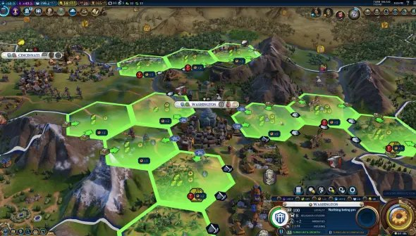
Синхронные сообщения
Есть еще одно решение, к которому в проектах приходят ближе к середине. Сначала сообщения все движки делали асинхронными, просто складывая в очередь и обрабатывая их за один проход в конце кадра. Это работает, но работает только на маленьких сценах.
Проблема всплывает, когда обработка одного сообщения порождает десяток новых. Что получается, в конце кадра накопилась тысяча сообщений, кадр ушёл в обработку очереди, игра подвисла. Плюс отладка ломается, потому что непонятно, откуда пришло битое сообщение, потому что в очереди нет стека вызовов, а контекст потерян.
Поэтому переходят к синхронным сообщениям, когда создали сообщение, набили его параметрами, и оно тут же исполнилось в текущем стеке. Стек вызовов осмыслен, отладка вменяема и нет «всплеска тысячи сообщений в конце кадра».
Бесплатно получаем возможность писать сообщения, которые шли через GUI, например в журнал и потом проигрывать. Это ровно та же модель, что в системе replay в RTS вроде StarCraft II или AoE2, только тут она используется не для записи мультиплеерных матчей, а для двух автотестов («запиши клики тестировщика, потом проигрывай каждую ночь на CI») и воспроизведение багов («приложи к багу запись и его можно повторить нажатием Play»).
GuiMessage msg;
msg.open("OnPropertyChanged");
msg.param("target", "label_armor");
msg.param("property", "text");
msg.param("value", std::to_string(armor));
msg.close(); // <-- здесь синхронно происходит вся обработка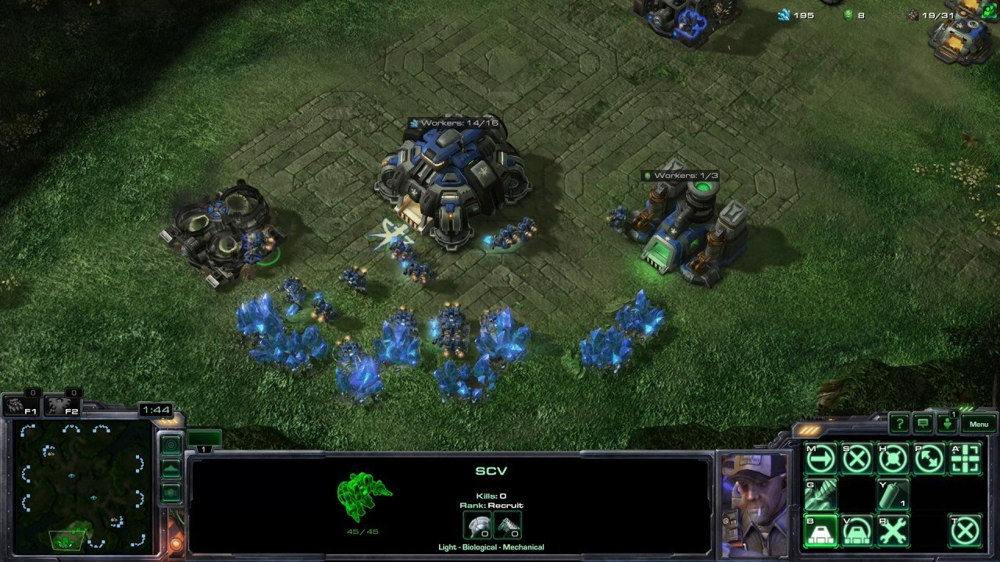
Раскладка, выравнивание, размеры и ограничители
Если задавать координаты контролов в пикселях, то интерфейс плывёт при разном разрешении. Если задавать только в процентах от экрана, то на широком 21:9 кнопки оказываются растянутыми, а текстуры в них размытыми. Если только выравниванием (top/bottom/center), то дизайнер теряет свободу, и в какой-то момент просит «вот эту кнопку привязать к правому краю с отступом 16 пикселей, но не дальше центра». При любых жестких ограничениях UI ломается, поэтому приходится идти на компромиссы и держать разные механизмы. Флаги выравнивания для (Left/Right/Top/Bottom/Center) привязки к точкам родителя, относительные координаты чтобы «эта панель занимает 30% ширины окна» и ограничители (constraints), вроде «но не меньше 200px и не больше 600px».
Без третьего пункта получается ситуация, что «правишь одну комбинацию флажков, а ломается другая, чинишь её и ломается уже третья». Тут не совсем пример из игр, а больше про мобильный UI, но игры тоже через все это проходили.
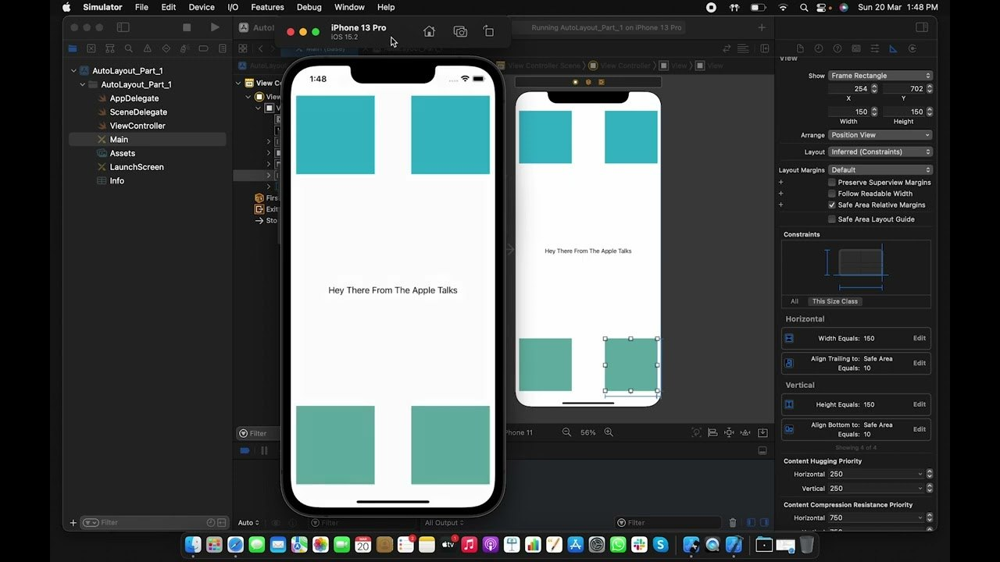
Unity в RectTransform понадобилось почти 5 лет и два мажора, чтобы появились anchors (флажки), pivot (точка относительного позиционирования), и numeric offsets (ограничения). Anchors, pivot и offsets появились все вместе в Unity 4.6 в 2014 году когда вышел uGUI, это был один большой релиз новой UI-системы, а не постепенное добавление за пять лет. До этого в Unity была система OnGUI (IMGUI) которая вообще не имела нормального layout-менеджера, так что "пять лет и два мажора" это скорее про то, сколько Unity жила без нормального UI вообще, а не про итеративное улучшение RectTransform.
Unreal же это сделал почти сразу, забрав хорошие решения из веба с его CSS, а CSS до этого пришёл к flexbox и grid через десяток лет экспериметов, но по сути решая ту же задачу - как сделать раскладку, переживающую любое разрешение без переборки. Unreal UMG появился в UE4 примерно одновременно с Unity uGUI, но большинство этих концепций пришли из десктопных UI-фреймворков (WPF, Qt, Cocoa), которые тоже решали ту же задачу независимо от веба и иногда раньше него.
Текстуры как 9-slice
Кнопка в GUI почти никогда не бывает плоской текстурой, и это или растягивающаяся рамка с углами, рёбрами и заливкой посередине, или нечто, что можно сложить из других "фигур", пэтому стандартный приём, придуманный в начале 2000-х и до сих пор живой в каждом движке. Разбиваем картинку кнопки на 3×3 ячеек таблицы, где угловые ячейки не тянутся, краевые тянутся по одной оси, а центральная по обеим.
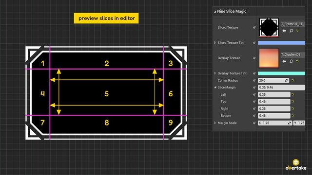
У каждой ячейки есть свойства что в ней лежит (кусок текстуры), как она растягивается (фиксированная, тянущаяся, тайл, зеркальный тайл). Это базовый 9-slice, который сегодня вшит везде от Unity до Flutter и практически любой движок интерфейса. Тайлинг исторически делается геометрией, а не uv-координатами в шейдере, чтобы это можно было запихнуть в один атлас текстур. Если тайлинг делается через uv координаты, то текстура должна быть отдельной, а атлас не умеет повторяться, попадая при повторении в соседний спрайт. А если тайлинг делать как несколько прямоугольников с одинаковыми uv, то можно использовать атлас и весь GUI запихнуть в одну текстуру и рендерить одним draw call'ом.
Целочисленные координаты
Если задавать координаты контролов во флоатах, рано или поздно приходит дизайнер, который делает кнопку, которая оказывается между двумя пикселями монитора. В итоге ровная линия кнопки становится двумя полупрозрачными линиями, текст превращается в кашу, а сам интерфейс становится мутным, это особенно хреново выглядит с текстом. Если у вас в игре UI «как-то размылся», то почти наверняка вы где-то накопили дробную часть в координатах.
Лекарство от этой бяки ровно одно, координаты контролов хранить в int, а все промежуточные вычисления (анимация, разрешение раскладки) делать в более широком типе float, но перед отправкой геометрии на GPU округлять до int.
Современная игровая индустрия пришла к этому и выработала свое правило, под названием «pixel perfect rendering» и любая пиксель-арт игра вроде Celeste, Dead Cells или Hyper Light Drifter не может позволить себе плавающие пиксели, и весь её GUI считается строго в целых числах. То же самое относится и не к пиксельным играм, просто там промахи менее заметны. Если вы посмотрите на пример ниже, то Normal часть выглядит смазаной именно поэтому.
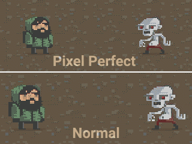
Игроки будут жаловаться на смазанные кнопки, как бы красиво они не выглядели.
Хороший UI это хороший Bridge
Любой UI, претендующий на переиспользование между проектами, обязан быть отвязан от всего максимально возможно. От рендера, звуковой системы, скриптового языка и движка инпута и единственный способ отвязки это паттерн Bridge, когда между GUI и каждой подсистемой стоит интерфейс, который в одном проекте смотрит на DirectX, в другом на OpenGL, в третьем на Vulkan, в четвёртом на Metal.
Все коммерческие UI движки в итоге пришли к этому, а вершиной развития стал Scaleform, который под капотом сидел поверх старой Flash, но выставлял абстрактный рендер-бэкенд, позволяя встраивать UI куда угодно, была бы текстура. Он работал и в Mass Effect 2, и в GTA V, и в Crysis 2. Но Scaleform не использовал Adobe Flash Player как зависимость, они просто написали собственный SWF-рантайм который читал тот же формат файлов что и Flash, а рендерил через абстрактный бэкенд. То есть это не просто "обёртка над Flash", а собственная реализация совместимая с форматом.
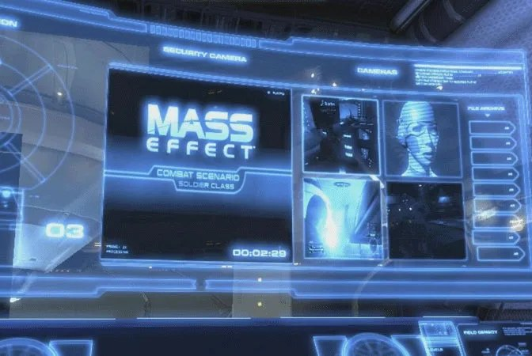
Coherent Gameface пошёл дальше и сделал собственный HTML движок, чтобы один и тот же UI можно было легко собрать под DX11/DX12/Vulkan/PS5/Switch без правок. Gameface основан на собственных библиотеках Cohtml и Renoir, написанных с нуля специально для игр, и не основан на WebKit, Chromium или Gecko, т.е. они написали свой с нуля совместимый с HTML5 движок рендера страниц и вот этот UI фактически является сайтом, со страницами.
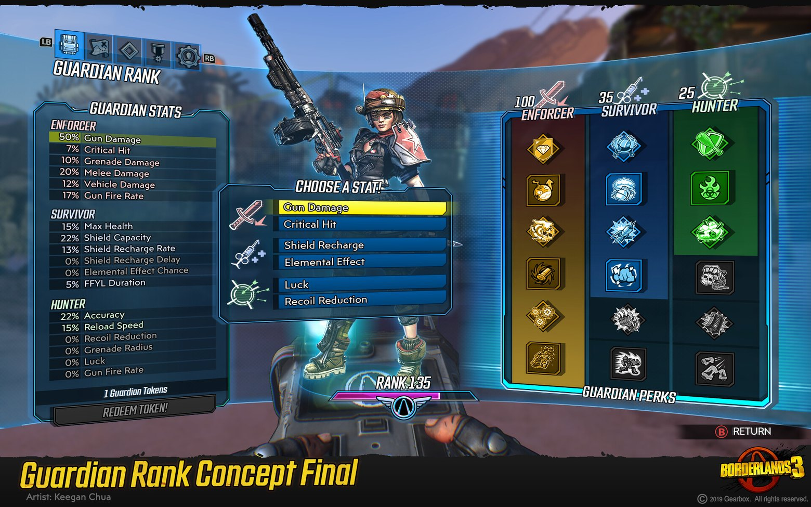
Текст, глифы, теги и стили
Сам по себе рендер форматированного текста несложен. Используется паттерн Flyweight (он же Glyph) и вся строка разбивается на маленькие объекты-символы, каждый из которых знает свою позицию, текстурные координаты в атласе шрифта, цвет и шрифт. Один и тот же набор глифов переиспользуется для разных строк, а тяжёлая часть (динамический битмап шрифта) лежит в кеше. Сложность начинается на уровне «как этот текст описать». Первое поколение UI разработчиков размечало текст инлайн-тегами, как в HTML:
Поздравляем, <b><color=red>Гэндальф</color></b>!
Уровень <size=24>10</size> достигнут.Это работало до тех пор, пока дизайнеру не приходила в голову очередная гениальная идею вроде «давайте все названия городов сделаем красным». Тут выясняется, что теги размазаны по тысячам строк локализации и поменять оформление, это в лучшем случае, ручками пройтись по всему файлу переводов и обновить теги, но переводы вещь довольно опасная, об этом чуть ниже будет. Поэтому правильным следующим шагом всегда оказывается таблица стилей, которая со временем вырастает в таблицу именованных стилей (hero_name, quest_title, damage_number), которые лежат в отдельном файле, и в текст вставляются только ссылки на стиль:
<styles>
<style name="hero_name" font="title.ttf" size="18" color="#ffcc00" bold="true"/>
<style name="city_name" font="title.ttf" size="14" color="#ff4040"/>
<style name="damage_crit" font="bold.ttf" size="36" color="#ff0000"/>
</styles>
<text>
Поздравляем, <param style="hero_name">{hero}</param>!
Город <param style="city_name">{city}</param> освобождён.
</text>Высокоуровневые теги типа <param> подменяются низкоуровневыми (<font>, <size>, <color>) на этапе подготовки билда, и художник UI может перекрасить все имена героев в одной точке, чтобы не вставать два раза. Хм... похоже мы изобрели CSS.
Этот CSS живет в WPFG в виде Style ресурса, в Unity UI Toolkit как.uss, и во многих движках как собственный формат, но идея одна - делаем нечто, что отделяет оформление от текста. Теперь текст сам по себе и только просит «нарисуй меня стилем hero_name», а как именно выглядит этот стиль решает уже таблица стилей.
Локализация, контекст и почему теги остаются в тексте
В идеальном мире локализация выглядела бы как словарь key -> string, но реальность азиатских, славянских и финно-угорских языков эту идеальность жестоко ломает об "колены падежов". Потому что формы слов меняются от числа, рода и контекста, а в азиатских языках еще и от места слова в предложении, а «5 enemies» переводится как «5 врагов», но «1 enemy» был «1 враг», а «2 enemies» уже стало «2 врага». Из-за этого локализаторы и разработчики игр очень не любят языки определнных групп, поминая по батюшке Кирилла с Мефодием.
Один шаблон тут не сработает, как впрочем не сработает и три и пять шаблонов. Кирилл и Мефодий, конечно, придумали алфавит, а не грамматические категории русского языка, так что поминать их по батюшке за шесть падежей немного несправедливо, но легче от этого не становится.
Самая жёсткая проблема не падежи, а порядок слов в составных строках и то, что по-английски ложится в "Found {count} {item}", в немецком требует инверсии, в японском глагол уходит в конец, и конкатенация строк здесь вообще не работает. Поэтому приходится для определенных языков еще и мастерить слой конверсии или вообще делать отдельные кастомные переводы, которые не укладываются в обычную, систему. Вы очень редко встретите например перевод на эстонский или финский, редки они по причине наличия в финском пятнадцати падежей, а в эстонском четырнадцати, где склоняется буквально всё, включая числа и притяжательные конструкции. Плюс агглютинация, когда слово обрастает суффиксами и одно английское существительное превращается в десяток форм, что делает локализацию дорогой, а маленький рынок не отбивает затрат, но энтузиасты, конечно, тоже находятся.
Поэтому в локализационной таблице приходится сохранять контекст и склонения внутри одной записи, а минимальный набор тегов для русского/польского/чешского будет формой описания множественного числа (one/few/many), рода (male/female/neuter) и иногда падеж. Это та же модель, что в ICU MessageFormat, но проблема в том, что игра теперь должна знать об особенностях разных языков и учитывать их в своем коде, а мы как раз хотели этого избежать.
enemies_killed = {count, plural,
one {{count} враг убит}
few {{count} врага убито}
many {{count} врагов убито}
other {{count} врага убито}
}
item_picked_up = {gender, select,
male {Подобран {item}}
female {Подобрана {item}}
neuter {Подобрано {item}}
}
combined = {count, plural,
one {Найден {count} {gender, select, male {артефакт} female {реликвия} other {существо}}}
few {Найдено {count} {gender, select, male {артефакта} female {реликвии} other {существа}}}
many {Найдено {count} {gender, select, male {артефактов} female {реликвий} other {существ}}}
}Если вы затаскиваете это в свой проект, то теперь игровой код знает, что меч мужского рода и это становится утечкой языковой специфики наверх. А еще для меча в японского или турецком языках рода нет вообще, и это ломают концептуально, выстроенную перед этим модель.
"sword": {
"text": "меч",
"gender": "male"
}Тогда игровой код знает только ключ "sword", а локализационная система сама достаёт род и применяет нужную форму. Игровой код остаётся слепым к языку. Но это работает только пока контекст статический. Но как только появляется динамика, вроде имени персонажа, введённого игроком, процедурно сгенерированного существа, или предмета из мода, то система снова требует от игрового кода передать контекст явно, и круг замыкается. Так что, полностью избежать знания о языке в игровом коде невозможно, можно только минимизировать и изолировать это знание в локализационном слое.
Локализаторы как показывает практика не совсем или совсем не вменяем, и в реальной работе это означает что интерфейс перевода должен быть максимально защищён от случайных правок. Например локализатор может стереть открывающий тег и положить весь UI, и рано или поздно это происходит, поэтому теги в локализаторе обычно показываются как непереводимые «пузырьки» (placeable tokens), которые нельзя редактировать, можно только переставлять.
Отдельно стоит упомянуть, что локализуются не только строки, и например, иконку с надписью «PRESS START» нельзя ни перевести через словарь, ни нарисовать поверх кнопки, потому что надпись часть текстуры. Поэтому реальный пайплайн локализует и текстуры тоже, когда на этапе сборки локализованной версии заменяются спрайты с инлайн-надписями, и в Японии в игре висит та же кнопка, но с надписью «スタート».
Шрифты, кривые руки, генератор и SDF
Со шрифтами в GUI есть две независимые проблемы. Шрифт чувствителен к попаданию в пиксель сильнее всего остального в UI и если координаты кнопки, которые сместились на полпикселя еще могут не заметить, то с буквой «ш» вы это заметите. Как уже упоминалось, координаты текста живут в int, и в реальном рендере есть отдельная стадия «прибить текст к пиксельной сетке», даже если кто-то передает его через флоаты
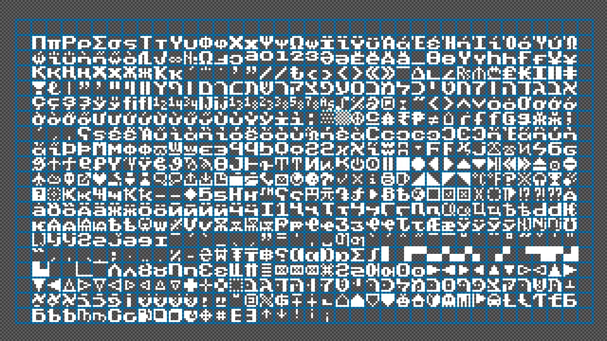
Другая проблема, что шрифт нужно как-то готовить и исторически в играх сложилось три пути.
Сделать растровые текстурные шрифты, когда рисуется атлас с глифами, к каждой букве идут UV-координаты. Это будет быстро работать на GPU, но плохо масштабироваться, потому что для каждого размера нужен свой атлас, и для каждой опции тоже потребуется свой атлас, что приводит нас к, порядка 8 вариантам одного шрифта.
Сделать векторные шрифты прямо в рантайме, когда рендер делается через FreeType или нативный API. Это лучше, но дороже, потому что каждый кадр придется пересчитывать растеризацию глифов слишком, поэтому всё равно нужен кеш-атлас, который заполняется по факту рендера глифов.
Можно использовать SDF-шрифты (signed distance field), появившиеся после 2007 года благодаря Крису Грину из Valve. Глиф хранится не как «есть пиксель / нет пикселя», а как «расстояние до ближайшего края», что даёт хорошую интерполяцию при любом масштабировании одной и той же текстурой, и идеально работает для надписей в трёхмерной сцене, которые камера приближает и удаляет. Doom 2016 практически весь свой UI делает на SDF, и подавляющее большинство современных игр после 2015 года использует именно этот подход для текстов в 3д пространстве.
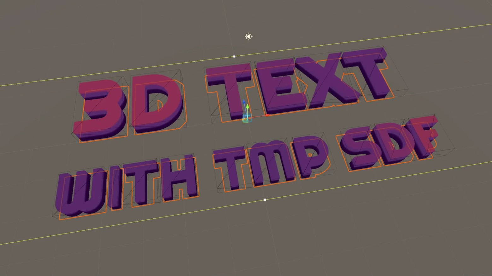
Эффекты
Когда дизайнер просит «давай это окно появится прозрачным и плавно станет видимым», очевидное решение это добавить контролу свойства alpha, scale, position_offset и навешивать на них анимацию. Это опять же работает для простых случаев, но быстро если эффектов становится много, их хочется их комбинировать или некоторые эффекты не сводятся к одному свойству (размытие, тонирование, smooth color shift, glow по краю).

Тогда в UI завозится эффект как архитектурное решение. Теперь эффект это фильтр, который сидит между свойствами контрола и итоговой геометрией, которая уже идёт на рендер.
struct IGuiEffect {
virtual void apply(const Control& src, RenderRequest& out) = 0;
};
class FadeEffect : public IGuiEffect {
float alpha;
public:
void apply(const Control& src, RenderRequest& out) override {
out.color.a *= alpha;
}
};
class ScaleEffect : public IGuiEffect {
float scale;
public:
void apply(const Control& src, RenderRequest& out) override {
out.transform.scale_around_pivot(scale, src.pivot());
}
};Эффекты складываются в стек, и идут друг за другом, каждый видит результат предыдущего. Это та же модель, что у post-processing в современных рендерах (Bloom -> Color Grading -> Vignette), у CSS-фильтров (filter: blur(5px) brightness(1.2)), и у Unity Canvas Renderer Effects. Из эффектов вырос весь диегетический UI, когда интерфейс выводится не плоским оверлеем, а внутрь сцены. Но это уже не фильтр на пути к рендеру, а отдельный пайплайн.
Render-to-texture и диегетический UI
При попытке встроить обычный 2D UI игру архитектура эффектов упирается в свой естественный предел, потому что фильтр на пути к рендеру предполагает, что UI живёт в плоском экранном пространстве и просто модифицирует то что туда попало. Но как только дизайнер просит «а давай полоска здоровья будет прямо на спине у персонажа» или «интерфейс инвентаря появляется как голограмма перед игроком», то весь стек фильтров становится бесполезен, потому что объект теперь существует в трёхмерном мире, у него есть позиция, нормаль, освещение и глубина, и рисовать его надо не поверх готового кадра, а вместе со сценой.
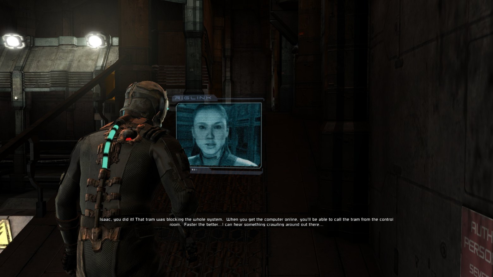
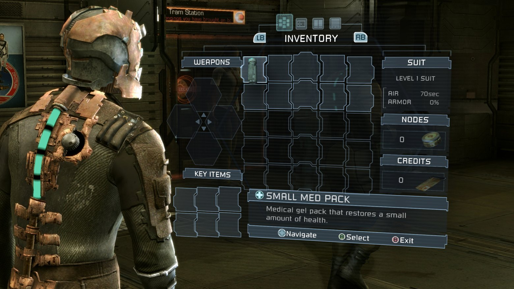
Dead Space это, наверное, самый цитируемый пример такого перехода, потому что там вообще нет экранного HUD в классическом смысле, а полоска здоровья встроена в позвоночник костюма Айзека и рендерится как геометрия персонажа, инвентарь раскрывается голограммой прямо перед камерой в мировом пространстве, и всё это проходит через тот же рендер-пасс что и геометрия сцены, с тенями, с отражениями, с окклюзией.
Cyberpunk 2077 идёт тем же путём для интерфейсов терминалов и голографических проекций, которые реагируют на угол обзора и частично перекрываются геометрией. В обоих случаях под капотом это уже не фильтр и не пост-процесс, а отдельный набор мешей с UI-материалами, которые живут в сцене как обычные объекты и требуют собственного управления глубиной, прозрачностью и порядком отрисовки относительно остальной геометрии.
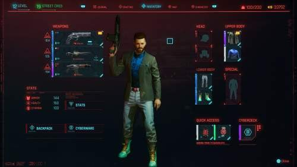
Это породило отдельную «диегетическую» школу UI, как упомянутый выше Dead Space, еще из ярких представителей у нас есть Doom (2016), где у пушки персонажа на верхней части корпуса есть маленький LCD-экран с количеством патронов. Это не текстура на модели, это GUI-окно с текстом, рендерящееся в текстуру в реальном времени, наложенную на меш оружия.
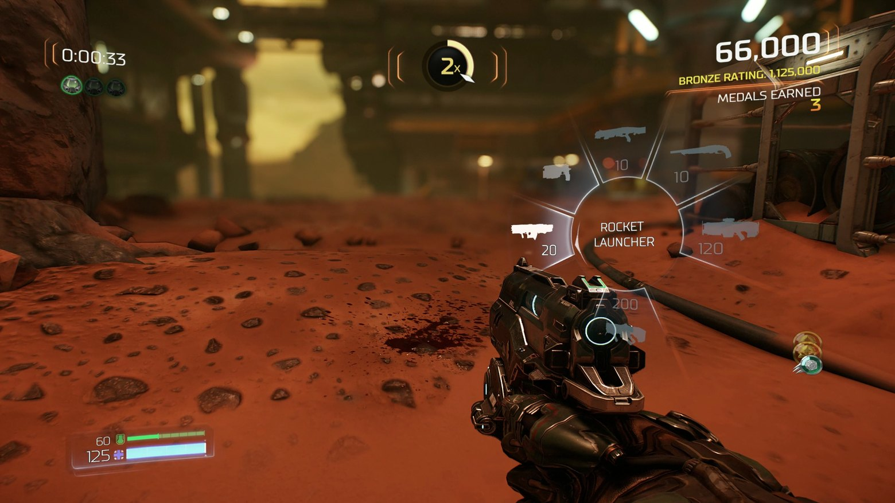
Или Metro Exodus (2019), где наручные часы Артёма с компасом и индикатором заражения отображаются как реальный 3D-объект, на который проецируется UI. Текстура с компасом обновляется каждый кадр через render-to-texture.
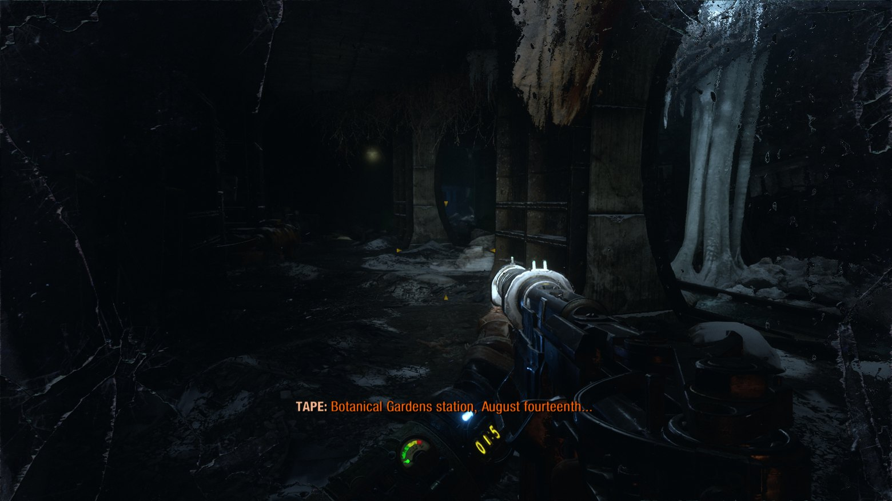
Т.е. мы собираем окно в редакторе, потом это рендерим в текстуру, накладываем куда надо и получаем в игре телевизор с фильмом и субтитрами на нужном языке». Это до сих пор одно из самых элегантных применений хорошо абстрагированного GUI: один и тот же пайплайн рисует и главное меню в backbuffer, и экран компьютера в локации, и LCD на оружии.
Как изменилось 20 лет спустя
А никак, архитектурный скелет GUI остался прежним, что и двадцать лет назад с небольшими добавками. Композит, свойства с рефлексией, связи, шаблоны, синхронные сообщения, Bridge поверх движка, оффлайн-локализация всё там же и на своих местах, просто называется в каждом движке по-разному и обросло локальными инструментами, но изменились детали и реализации.
Появился и стал популярен иммедиат-мод режим (ImGui), забрав почти весь dev-tools-инструментарий. Если 20 лет назад редактор GUI всегда был в retained mode (контролы хранят состояние), то для отладочных панелей внутри игр сегодня стандарт это Dear ImGui, где контролы пересоздаются каждый кадр, нет дерева, нет редактора.
Отдельные HTML движки внутри игр стал нормой для AAA, и Coherent Gameface, Scaleform, Awesomium-наследники (CEF) позволяют верстать игровой UI как сайт. Cyberpunk 2077, PUBG и ряд EA-тайтлов, Origin-клиент всё это собрано как сайты с рендером в игровую сцену. SDF-шрифты вытеснили растровые, а binding всего и вся движкового в UI перестал быть редкостью. Последнее время GPU-driven UI все больше перетягивает на себя разработку, и многие движки уже рендерят целиком экран UI одним проходом.
Что не изменилось, так это причины, по которым GUI-системы переписывают. До сих пор любой техлид, попавший на новый проект, начинает с фразы «давайте сделаем нормально один раз», и до сих пор через два года выясняется, что задач у GUI оказалось больше, чем в плане.
Если хотите наступить на больную мозоль лиду, задайте вопрос надо ли переписать UI систему и наблюдайте как у него задёргался глаз и он побежал за валерьянкой.
З.Ы. Не переключайтесь, будет еще вторая часть про то как этот самый UI мучали от игры к игре...
 ← Все статьи
← Все статьи